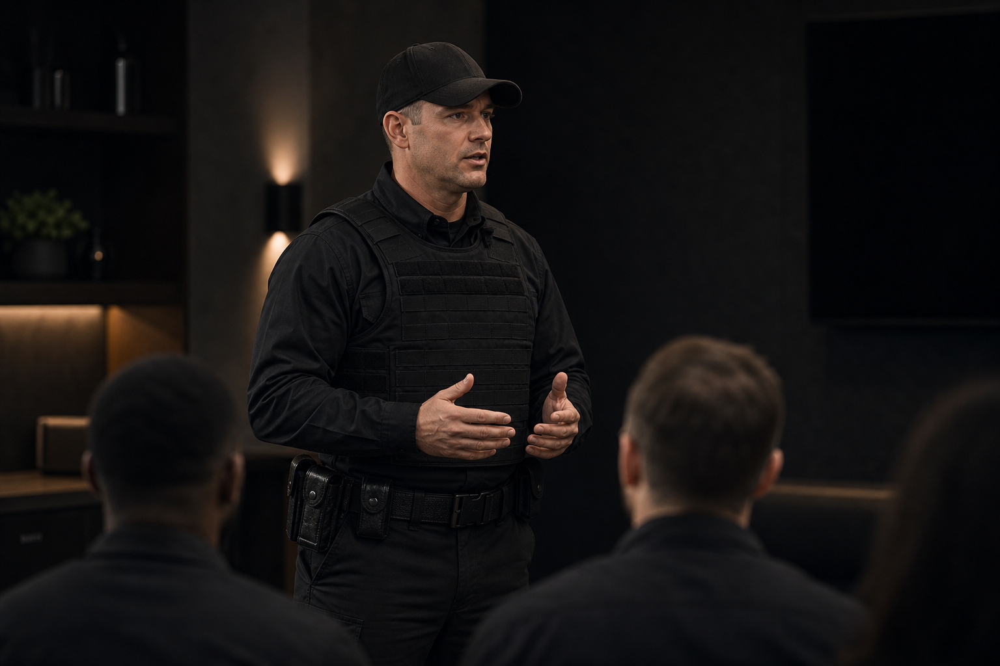
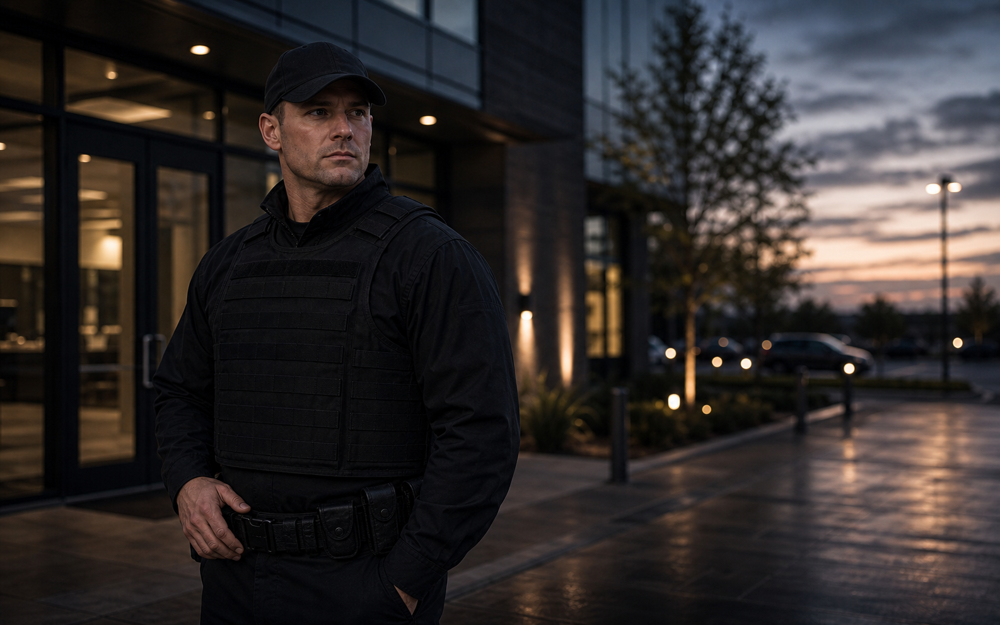
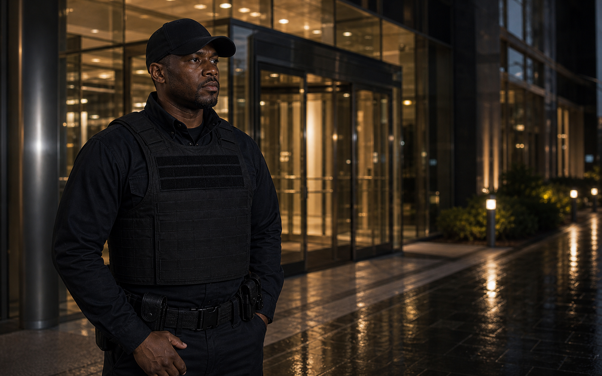

Officer standards
Reliability, appearance, documentation, and judgment are the traits Highline needs from applicants representing client properties.

Take the first step toward a security career with a veteran-owned team.
Highline keeps the trust factor practical: veteran-owned leadership, law-enforcement experience, real communication, and security work that can be documented after the shift.
Reliability, appearance, documentation, and judgment are the traits Highline needs from applicants representing client properties.
OSHA's workplace-violence context shows why security officers need composure, communication, and escalation judgment, not bravado.
SourceVeteran-owned leadership and law-enforcement experience shape the expectations for how officers communicate and document.


Highline looks for applicants who understand that professional security depends on calm judgment, clear post orders, useful notes, and a respectful presence on the client property.
That matters across apartment communities, events, patrol assignments, construction sites, and commercial posts. A professional security officer observes, communicates, documents conditions, and knows when to escalate instead of simply standing in uniform.
Applicants should understand that appearance, reliability, communication, and judgment are part of the job. The application form gives Highline a cleaner starting point before follow-up by phone or email.
The best applicants understand that security work depends on judgment, presence, and consistency.
Security assignments depend on showing up on time, following instructions, and communicating when conditions change. Reliability is part of the service the client is buying.
Highline's brand is trust-focused. Officers should be able to look sharp, speak respectfully, and handle public-facing situations without unnecessary drama.
Useful notes matter. Applicants should be comfortable observing details, writing clearly, and understanding why reports help managers and supervisors make decisions.
Licenses, relevant experience, schedule availability, and willingness to follow site-specific post orders all help Highline decide which assignments may fit.
Highline is looking for people who value accountability, clear communication, and respectful service. Complete the application form below or send questions to info@highlinesecurityservices.com.
Applicants should use the form to give Highline a realistic picture of availability, experience, licensing, and readiness for site-specific post orders. Clear information helps the team decide whether a candidate may fit patrol work, apartment coverage, event assignments, construction or fire watch support, or another professional security role.